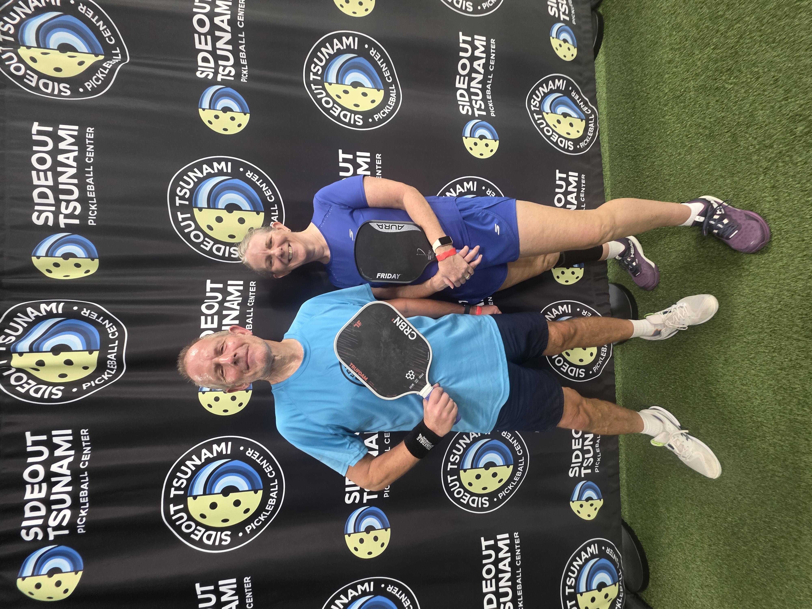

Seattle was our final stop on our latest pickleball travels through North America. We weren't interested in simply finding courts on a map — we wanted to know where a travelling player can actually get good games. We played at Sideout Tsunami in South Seattle and analysed our games with PBVision to see how the experience, and our own play, really measured up.

Sideout Tsunami is a fantastic indoor facility which opened in 2025, with 26 indoor courts — three of them equipped with cameras. It was the venue for PPA Seattle in August 2026, and the crowd here are friendly, with open play sessions that are good and competitive.
We joined a 3.7+ advanced open play session. The level was very good and probably ranged from 3.5 to 4.5. The session was well organised and included a challenge court, and Sideout Tsunami also runs sessions at every level daily, including a dedicated 3.5–4.0 bracket, making it a great choice for players around that level too.
Our take: probably the best facility we have ever played at — the only real friction is booking ahead of time as an overseas visitor.
This wasn't just another pickleball session — we filmed and analysed all 6 games from this session with PBVision to see what actually happened on court.
The numbers backed up what the session felt like. Dave's legal third-shot rate was a strong 90%, but the biggest flag was speed-ups — only 60% of rallies won when he tried to take the ball out of the air early. Exactly the kind of thing we'd never have noticed without reviewing the footage.
Watch the full PBVision breakdown →| Court quality | ★★★★★ |
| Quality of games | ★★★★★ |
| Ease of joining | ★★☆☆☆ |
| Competitive level | ★★★★★ |
| Value | ★★★★★ |
| Wanderers rating | 9/10 |
Would we go back? Absolutely. The courts are excellent and there are options for players at every level, from beginner-friendly sessions right up to advanced open play. The one thing to plan ahead for: booking requires a US phone number, and as overseas visitors we had to email the facility and eventually book using a friend's number. Sort that out before you land, and the rest is easy.
Free outdoor courts by Green Lake, running on a paddle-stacking system with no booking required. We visited on a midweek evening and found them busy, with a level that seemed very beginner friendly — a solid backup if Sideout Tsunami doesn't fit your schedule, or if you'd rather play for free.
A brand new indoor facility which opened in Summer 2026, with 20 courts. We didn't play here ourselves this trip, but with a similar open-play and private-court setup to Sideout Tsunami, it's worth considering if you're staying closer to this side of the city.
Most Sideout Tsunami sessions require a US phone number to book. We emailed ahead, but didn't get a reply until after our session — in the end we booked using a friend's number.
Sideout Tsunami runs open play at every level daily, including a 3.5–4.0 bracket. The 3.7+ advanced session we joined ranged from 3.5 right up to 4.5.
Green Lake's outdoor courts are free and don't need booking, though the level is very beginner-friendly and evenings get busy.
Three of Sideout Tsunami's courts have cameras built in — an easy way to get your games analysed on PBVision without setting up your own equipment.
Seattle turned out to be one of the strongest stops on this trip. Sideout Tsunami is probably the best facility we've played at — 26 courts, a great crowd, and genuinely competitive open play at every level. The only real hurdle is booking as an overseas visitor, so sort that out ahead of time and the rest takes care of itself.